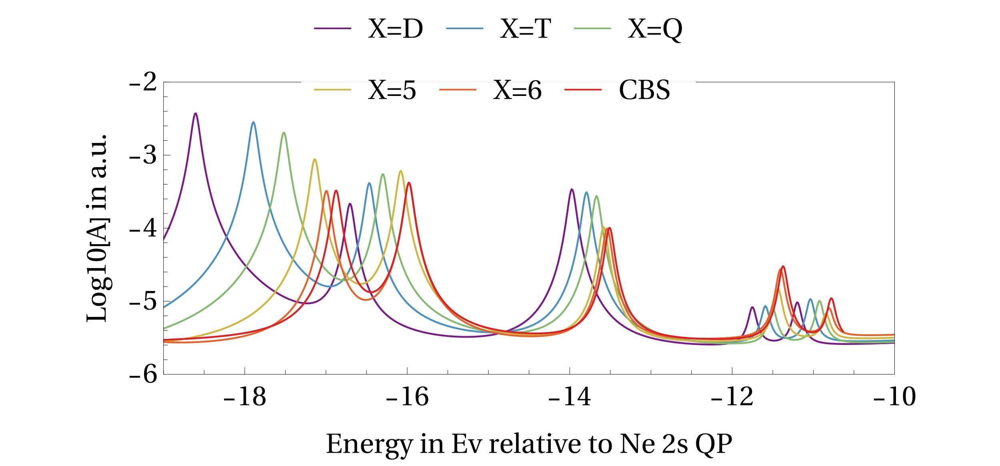

Spectroscopy - the material-specific signature when light interacts with it - is a crucial tool for many tasks, such as identifying unknown substances, detecting pollution, designing solar cells or microchips, medical diagnosis and more. Predicting a material's spectrum is one of theoretical many body physics biggest tasks.

Multichannel Dyson Equation
During my PhD, I work on developing a computational method that looks at how molecules and atoms change in interaction with light. I do this in the research group of Pina Romaniello and Arjan Berger.
More specifically, I implement a method called the multichannel Dyson equation (MCDE). This is a mathematical technique used to calculate the excitation spectrum of a system. That means the different energies at which a molecule or atom can absorb or release energy. These excitations are important for understanding phenomena such as electrical or heat conduction, reflexitivity, and more.
The Green's functions and Dyson equation
The MCDE method is mainly based on two ideas from theoretical physics: Green's functions and the Dyson equation.
A molecule can be described mathematically by a Hamiltonian. This is essentially a large equation that includes all the interactions in the system, such as the forces between electrons and the forces between electrons and atomic nuclei. The more interactions we include, the more complicated this equation becomes, and solving it directly can be extremely difficult.
Instead of solving the Hamiltonian directly, physicists often use Green’s functions. These are mathematical tools that describe how particles move and respond to disturbances (such as subjecting the molecule to x-ray) in a system. Green’s functions contain the same physical information as the Hamiltonian, but they are often easier to work with, especially when we use linear algebra and complex numbers.
The Dyson equation is a way to improve this description. It accounts for the fact that an electron moving through a molecule can repeatedly interact with its surroundings. For example by scattering off other electrons or the atomic potential. Mathematically, this process can be written as an infinite series that sums over repeated scattering events. Fortunately, this series has a known solution, which makes the calculation easy.
The MCDE method goes one step further by using many-particle Green’s functions, which describe several electrons interacting with each other at the same time. These functions are connected through the Dyson equation, allowing us to model complex processes where multiple electrons influence one another. This provides a more intuitive and physically realistic way to describe many-electron effects, which are usually very difficult to capture in calculations.
The other methods on the market: DFT and GW
Many common computational approaches use density functional theory (DFT). While DFT is widely used, it relies on empirical parameters which are partly adjusted to match experiments .This introduces a lot of room for uncertainties, as one does not known exactly the why to a good parameter. Another common method is GW (the name, not an abbreviation). It is free of these empirical parameters, but is computationally demanding because it requires evaluating a very large number of complex integrals.
The MCDE approach provides an alternative. It avoids many of these difficult integrations, by replacing them with simple sums of so-called self energies, and follows a single, consistent mathematical framework that does not rely on empirical parameters. In practice, the problem becomes one of large-scale linear algebra, where we determine the system's properties by solving a matrix diagonalization problem, or matrix multiplication problem.
My impact
I wrote a Python program that performs the MCDE calculation for up to three-particle interactions. The code begins with Hartree–Fock orbitals generated by a quantum chemistry package such as PySCF for example. From this starting point, it can compute photoelectron spectra. These graphics show when light of a certain energy gets absorbed by an e.g. molecule. Because of the energy conservation, the energy gets used in the molecule to excite an electron so much that it can leave the molecule althogether. The absorbed energy leaves a big peak in the spectrum. When an electron leaves the molecule, the other electrons feel its absence, even to the extent that some might gain some energy, and be in an excited state. These small peaks are called satellites, and come after, so higher in energy than, the big peak.
It is also possible to add an electron to a molecule. The energies above zero on the energy scale reflect this process, whereas the ones below zero are the electron removal processes. My program captures all of these processes, which can include up to a addition/removal of an electron, and excitation of two other. It yields all the peaks, and treats them all with the same accuracy, and computational cost, unlike the typical implementations of DFT and GW, which usually only focus on the big peaks close to the zero energy.
To carry out this work, I used several scientific and programming tools, including
- Python (SciPy, NumPy, PySCF...)
- Wolfram Mathematica (a high-level analytical computation all-purpose software similar to Matlab)
- FORTRAN
- high-performance computing systems on Linux
- Linear Algebra (exact diagonalization, matrix multiplication methods such as Lanczos algorithm)
- Functional Analysis (Green's functions)
- Numerical methods
Publications
The work is covered in different publications in top scientific journals.
- Ground and excited-state properties of the extended Hubbard dimer from the multichannel Dyson equation. S. Paggi, J.A. Berger, P. Romaniello. Journal of Chemical Physics, 163, 154109 (2025).
- Multichannel Dyson equations for even- and odd-order Green's functions: Application to double excitations. G. Riva, T. Fischer, S. Paggi, J.A. Berger, P. Romaniello. Physics Review B 111, 195133 (2025).
- Multichannel Dyson Equation: Coupling Many-Body Green’s Functions. G. Riva, P. Romaniello, J.A. Berger. Physics Review B 111, 195133 (2025).